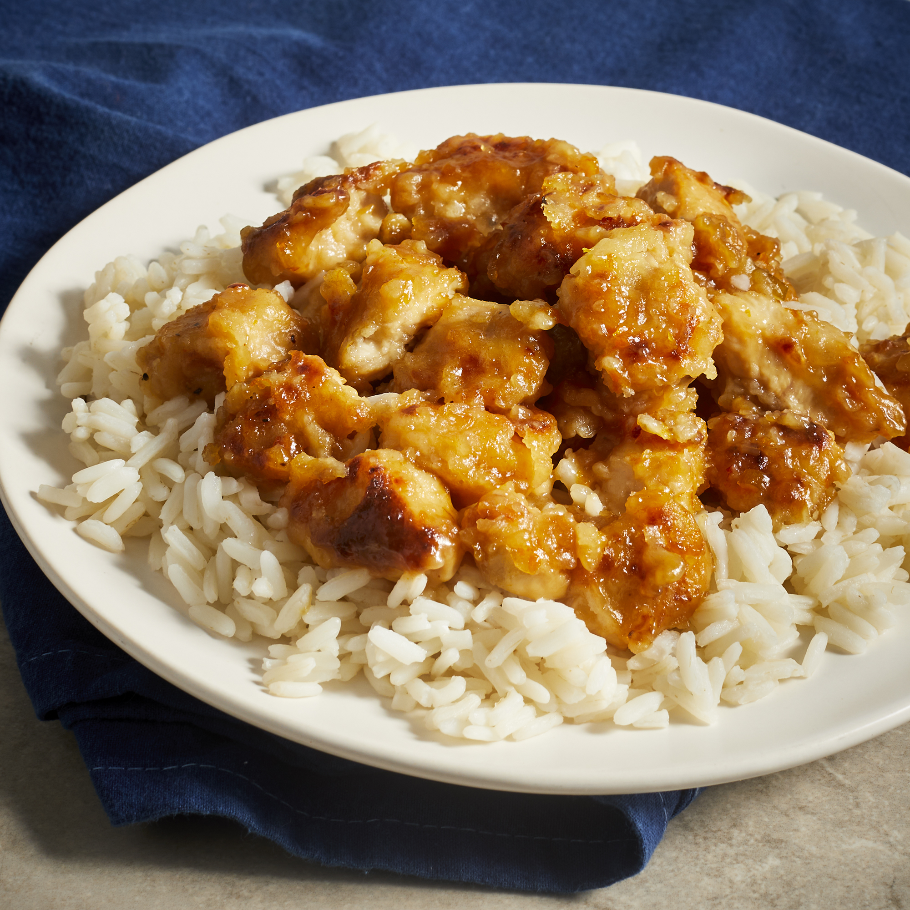

Asian Orange Chicken

Description
This orange chicken recipe is sticky, sweet, and delicious. It tastes similar to orange chicken from a popular Chinese
restaurant in the mall! It's easier to make than you think for a delicious takeout at home.
Ingredients
Sauce:
- 1 1/2 cups of water
- 1/3 cup rice vinegar
- 1/4 cup lemon juice
- 2 1/2 tablespoons orange juice
- 1 cup packed brown sugar
- 2 tablespoons chopped green onion
- 1 tablespoon grated orange zest
- 1/2 teaspoon minced fresh ginger root
- 1/2 teaspoon minced garlic
- 1/4 teaspoon red pepper flakes
- 3 tablespoons cornstarch
- 2 tablespoons water
Chicken:
- 2 large skinless, boneless chicken breasts, cut into 1/2 cubes
- 1 cup all-purpose flour
- 1/4 teaspoon salt
- 1/4 teaspoon pepper
- 3 tablespoons olive oil
Steps
- Combine water, rice vinegar, lemon juice, soy sauce, and orange juice for sauce into a saucepan over medium-high heat.Stir in brown sugar, green onion,
orange zest, ginger, garlic, and pepper flakes; bring to a boil. Remove from heat, and cool for 10 to 15 minutes.
- Place chicken in a resealable plastic bag. Pour in 1 cup cooled sauce. Seal the bag, and refrigerate for at least 2 hours. Reserve the remaining sauce.
- Mix flour, salt, and pepper in another resealable plastic bag.
- Remove chicken from the marinade and place into the bag of seasoned flour. Seal the bag and shake to coat.
- Heat the olive oil in a large skillet over medium heat. Cook chicken in the hot skillet until browned on both sides. Remove to a paper towel-lined plate
and cover with aluminum foil. Wipe out the skillet.
- Pour reserved sauce into the skillet and bring to a boil over medium-high heat.
- Mix together cornstarch and water until completely smooth. Stir into the boiling sauce. Reduce heat to medium-low, add the chicken, and simmer, stirring
occasionally, until cooked through, about 5 minutes.